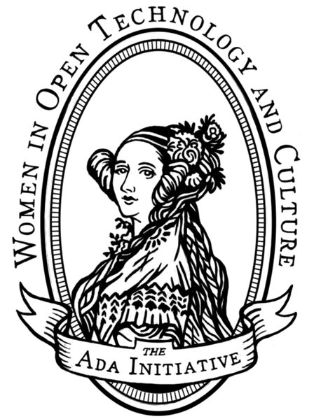

This is a tribute website that describes the biography, work, and legacy of Ada Lovelace, who was a pioneer of computing at a time when computers did not yet exist.
Biography
 Ada Initiative Ada Lovelace logoAugusta Ada Byron was born on December 10, 1815 in London, United Kingdom; He was able to develop his mathematical skills thanks to the support of his mother, who was also his teacher and mentor. At a time when women did not have access to higher education, Ada Lovelace was recognized and admired by contemporary scientists and mathematicians of her time, and she rubbed shoulders with characters such as Faraday or Charles Babbage himself, who arrived to give her the nickname of "the lovely number". Ada Lovelace, is remembered mainly for having written a description of the old analytical machine of Charles Babbage, and for having developed instructions to make calculations in an initial version of the computer.
Work
His work was forgotten for many years, attributing him exclusively a role of transcriber of Babbage's notes. He characterized his contribution by calling her his interpreter, although recent research shows the originality of his point of view on the instructions necessary for the operation of the analytical machine.
Not only was Lovelace a pioneer of programming, but she saw beyond Babbage's vision for calculation to other potential uses for the analytical engine. She saw that the instructions and data need not represent numbers and numerical operations, but could also represent letters, images or music - a vision of modern computers and software over a century before they came into existence.
Legacy
Ada Lovelace was the first person to write a program for a programmable computer, wrote a "plan" where she describes the steps that would allow calculating the values of Bernoulli's numbers, her first program, which used two loops, with this she demonstrated the ability to bifurcation of the Babbage machine. He also described how trigonometric operations that had variables could be calculated using the Babbage machine.
In recognition of his work there is a programming language that bears his name, based on Pascal and created in 1979 by the United States Department of Defense. The "ADA Programming Language" is used mainly in those environments where great safety and reliability is indispensable, which is why it is chosen by the defense departments, the aeronautical industry and the aerospace industry, among others.
His work has been very studied in recent times and in 2010 he published a film about his life, "The lovely number".